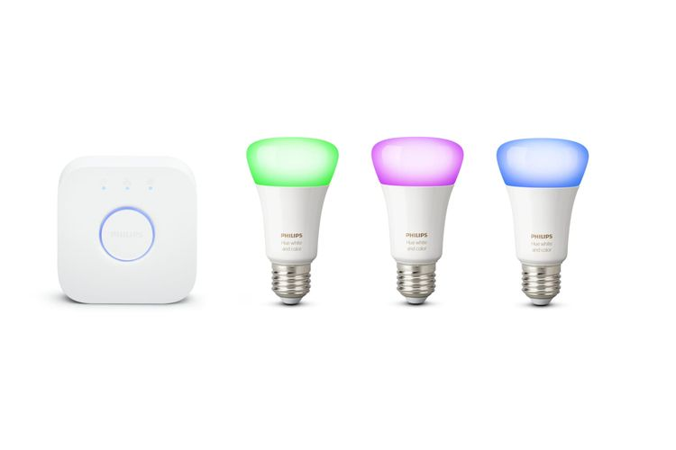

SMART LED
Nama Kelompok
LED (Light Emitting Diode)
LED adalah komponen elektronika yang dapat memancarkan cahaya monokromatik ketika diberikan tegangan maju. LED merupakan keluarga Dioda yang terbuat dari bahan semikonduktor. Warna-warna Cahaya yang dipancarkan oleh LED tergantung pada jenis bahan semikonduktor yang dipergunakannya.
Pengertian Smart LED
Rumah pintar pada umumnya memperhatikan efesiensi pemakaian energi yang dapat dimaksimalkan dengan memakai pencahayaan alami di siang hari, tata letak lampu penerangan yang tepat, pemakaian peralatan listrik yang hemat energi dan pemakaian lampu hemat energi.
Smart LED merupakan sebuah teknologi nirkabel yang dikembangkan untuk dapat mengirimkan data melalui perantara cahaya. Lampu LED juga mengonsumsi energi yang jauh lebih sedikit daripada teknologi sebelumnya, hal ini memberikan ruang untuk mengembangkan jaringan komunikasi yang hemat biaya energi dan mengurangi emisi karbon dalam jangka panjang.
SEJARAH DAN PERKEMBANGAN SMART LED
Smart Light pertama kali dikembangkan oleh ilmuwan di Boston University College of Engineering pada tahun 2008, Rensselaer Polytechnic Institute di Troy, NY, dan University of New Mexico juga ikut berpartisipasi dalam proyek ini, dibawah bantuan National Science foundation. Penelitian yang dipimpin oleh professor Thomas Little ini bertujuan untuk mengembangkan teknologi komunikasi optik yang akan membuat lampu LED setara dengan jalur akses Wi-Fi. Wi-Fi sendiri awalnya dikembangkan sekelompok insinyur Amerika Serikat yang bekerja pada Institute of Electrical and Electronis Engineers (IEEE)berdasarkan standar teknis perangkat bernomor 802.11b, 802.11a dan 802.16.
Penelitian mengenai lampu pintar LED wifi ini juga dikembangkan oleh perusahaan Siemens. Para peneliti dari Siemens mengaku telah memecahkan rekor untuk transmisi data secara nirkabel, dengan memanfaatkan LED putih (diode pemancar cahaya), bukan gelombang radio. Peneliti Siemens mengklaim dapat mengirimkan data pada 500Mbps, mengalahkan rekor sebelumnya 200Mbps, hal ini sangat jauh melebihi standar pengiriman data yang dimiliki wi-fi saat ini. SMART LED ini juga memiliki fungsi ganda yang memberikan perkembangan baru di dunia otomotif. Pemasangan lampu LED pada rem belakang mobil dapat membantu mengurangi terjadinya kecelakaan dan pelanggaran lalu lintas. Smart Light LED saat ini sedang dikembangkan untuk membantu membuat sistem transportasi lebih aman.
CARA KERJA SMART LED
Lampu pintar LED sudah memiliki prototype yang diberi nama Smart Lighting, prototype ini terbuat dari papan elektronik 3 x 6 inchi yang dibagi dalam 2 bagian. Bagian pertama terdiri dari 9 buah komponen lampu LED putih (diode pemancar cahaya) dengan tingkat kecerahan yang tinggi yang berfungsi untuk mentransmisikan data. Bagian yang kedua terdiri dari 3 buah diode foto (photodiode) yang berfungsi untuk menerima sinyal cahaya dan mengubahnya menjadi sinyal elektronik. Prototype Smart light menghasilkan sinyal dari proses kerja lampu LED yang dimodulasi pada frekuensi tertentu yang memungkinkan untuk transfer data berkecepatan tinggi. Setiap papan Smart Light dapat memberikan sinyal ke perangkat elektronik yang kita miliki seperti HP,laptop, PDA. Kemampuan untuk mengubah frekuensi modulasi lampu LED on dan off secara cepat adalah kunci dari teknologi baru ini, begitu cepat perubahan itu sehingga tidak terlihat oleh mata manusia. Cahaya LED yang berkedip-kedip dalam pola tertentu memungkinkan transmisi data tanpa ada perubahan nyata dalam pencahayaan ruangan.
KEKURANGAN DAN KELEBIHAN SMART LED YANG DIKONTROL MELALUI SMARTPHONE
KELEBIHAN SMART LED YANG DIKONTROL MELALUI SMARTPHONE
LED yang bisa dinyalakan atau dimatikan dari jarak jauh melalui smartphone. Sekarang Anda bisa menciptakan smarthome dirumah Anda dengan memakai smart light
Perbandingan, lampu bohlam biasa umurnya hanya sampai 1000-2000 jam pemakaian. Selain tahan lama, kita juga bisa lebih menghemat daya dengan lampu pintar. Teknologi LED sebenarnya sudah lebih hemat dibanding dengan lampu biasa. Apalagi ditambah dengan teknologi pintar di dalamnya. Dengan teknologi lampu pintar kita bisa menghemat daya yang berarti juga menekan biaya tagihan listrik. Teknologi lampu pintar memungkinkan kita mengatur kapan lampu nyala dan mati. Bahkan lampu pintar yang disertai sensor gerak mampu secara otomatis mati ketika ruangan tertentu telah kita tinggalkan.
Setelah menginstal aplikasi dalam smartphone, kita dapat segera mengatur pencahayaan ruangan dari ponsel. Kita dapat mematikan, menyalakan, dan juga mengatur redup terangnya cahaya. Misalnya meredupkan lampu saat hendak tidur juga mengatur agar lampu secara otomatis padam ketika kita telah bangun di pagi hari.
Keunggulan lain dari lampu pintar ini tentu saja kita bisa mengatur warna lampu sesuai mood atau aktivitas yang tengah kita jalani. Kita bisa secara bebas memilih aneka ragam warna cahaya melalui smartphone. Pemilihan cahaya ini penting untuk meningkatkan produktivitas kerja atau membantu kita untuk menjalani hari dengan lebih ceria.Misalnya kita hendak membaca, kita dapat mengubah warna dengan pencahayaan yang putih terang. Ketika suhu udara tengah terik, kita dapat membantu menyejukkan suhu ruangan dengan lampu yang terang namun temaram sehingga tidak membuat panas. Begitu pun ketika kita tengah mengadakan pesta, kita dapat mengubah ke warna yang mencolok seperti warna merah jambu, ungu, atau hijau. Intinya warna cahaya lampu bisa dikustomisasi sesuai mood kita.
Ketika menggunakan lampu neon biasa, masalah yang kerap timbul adalah seringkali lampu yang kita beli terlalu terang atau terlalu redup. Lampu yang terlalu terang membuat kita gerah dan lampu yang terlalu redup memusingkan kita ketika beraktivitas di kamar pada malam hari. Nah dengan teknologi lampu pintar, ini kita bisa meredupkan cahaya lampu pada malam hari sehingga perlahan mampu membuat kita terlelap.
KEKURANGAN
Jika dibuat perbadingan harga antara lampu LED dengan jenis lampu lainnya maka bisa dilihat jika lampu LED memiliki bandrol harga yang lebih mahal. Sebenarnya lampu LED sudah lama ditemukan tetapi baru-baru ini saja bisa diproduksi masal dengan harga yang lebih murah tanpa mengurangi manfaatnya. Perkembangan zaman yang semakin maju mungkin bisa menjadi pintu untuk membuat harga dari lampu jenis ini semakin akrab dengan kantong masyarakat.
Fitur- Fitur Pada SMART LED
1. ON / OFF Lampu dari Smartphone
2. Sleep Timer
3. Pengaturan ON / OFF Lampu ( Schedule )
4. Pengaturan Cahaya Lampu
5. Menghasilkan Banyak Variasi Warna
6. Dapat Mengubah Temperatur Cahaya
7. Tersambung dengan Internet
8. Daya Listrik Kecil
Jenis-jenis Smart LED
1. Philips Hue
2. Xiaomi Yeelight RGBW
3. Elgato Avea
4. Olixar Light Beats Bluetooth Speaker Bulb
5. LIFX Color 1000
- Philips Hue 
Philips Hue disebut 'lampu pintar' karena menggunakan jaringan nirkabel. Dengan demikian memungkinkan orang menjadi terhubung, mengelola, dan mengendalikan suasana pencahayaan di berbagai ruangan dari jarak jauh melalui smartphone.
- 2. Xiaomi Yeelight RGBW

- 3. Elgato Avea

- 4.Olixar Light Beats Bluetooth Speaker Bulb

- 5.LIFX Color 1000

- Jaringan WiFi rumah, sebab lampu akan terus terhubung ke internet
- Smartphone Android atau iOS untuk mengontrol lampu
Cara Connect SMART LED
Sebelum memulai, pastikan telah memiliki beberapa hal berikut:
|
Langkah 1 |
Langkah 2 understand, and agree… dan tap tombol Login. |
 |

|
|
Langkah 3 |
Langkah 4 |
 |

|
|
Langkah 5 |
Langkah 6 lampu sebanyak 5 kali dengan metode tradisional. |
 |

|
|
Langkah 7 |
Langkah 8 akan terhubung. Selanjutnya, tap Next. |
 |

|
|
Langkah 9 |
Langkah 10 masuk ke pengaturan dan mengakses segala fiturnya. |
 |

|